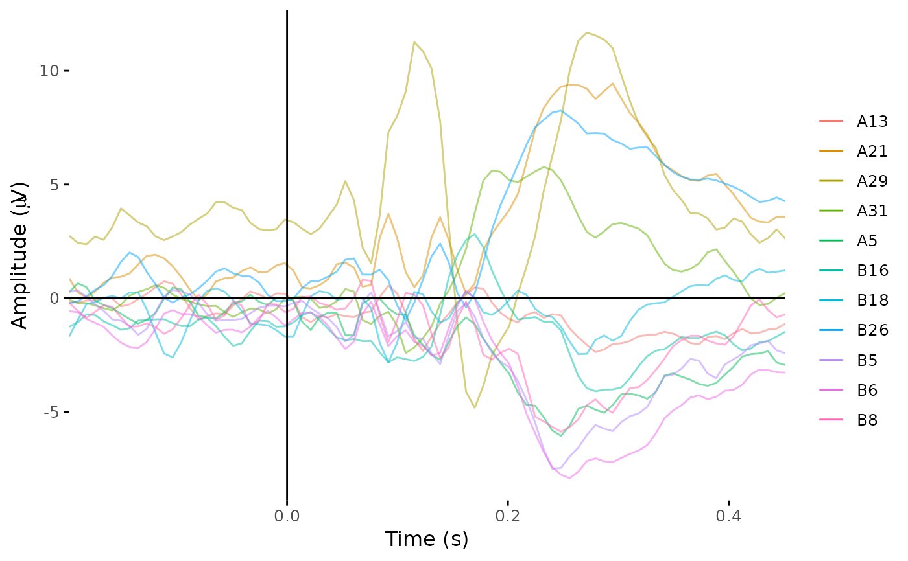
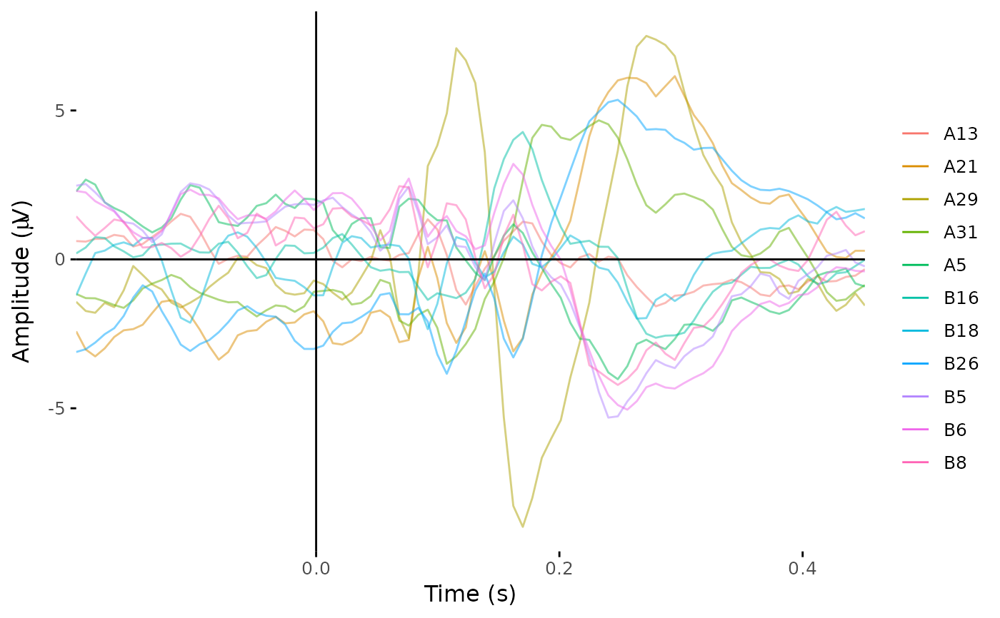
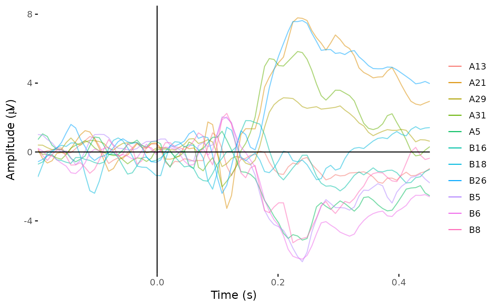

This function can be used to either recreate "mixed" (i.e. channel level) timecourses from an ICA decomposition, or to apply a set of ICA weights to a given dataset for the purpose of removing specific ICA components from that dataset.
Usage
apply_ica(data, ...)
# S3 method for class 'eeg_ICA'
apply_ica(data, comps = NULL, ...)
# S3 method for class 'eeg_epochs'
apply_ica(data, decomp, comps, ...)Methods (by class)
apply_ica(eeg_ICA): From giveneeg_ICAobject, recreate channel timecourses.apply_ica(eeg_epochs): Combine a specific set of ICA weights with anyeeg_epochsobject.
Author
Matt Craddock matt@mattcraddock.com
Examples
test_ica <- run_ICA(demo_epochs, pca = 10)
#> Reducing data to 10 dimensions using PCA.
#> Running SOBI ICA.
plot_butterfly(demo_epochs)
#> Creating epochs based on combinations of variables: epoch_label participant_id

# Reconstruct the original data from the ICA decomposition.
# Note that the ICA process subtracts the mean from each epoch,
# so the reconstructed plot may look slightly different to the original.
plot_butterfly(apply_ica(test_ica))
#> Creating epochs based on combinations of variables: epoch_label participant_id

# Remove component 2 from the data
plot_butterfly(apply_ica(demo_epochs, test_ica, comps = 2))
#> Creating epochs based on combinations of variables: epoch_label participant_id
